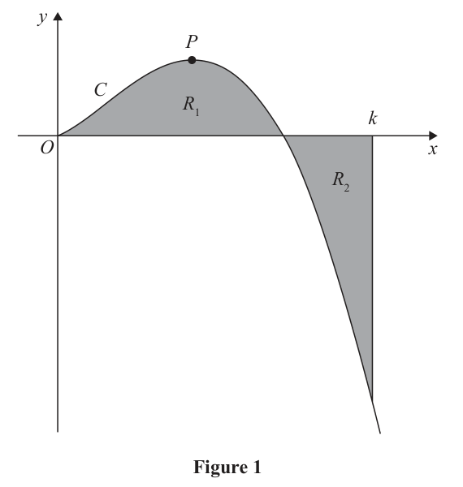
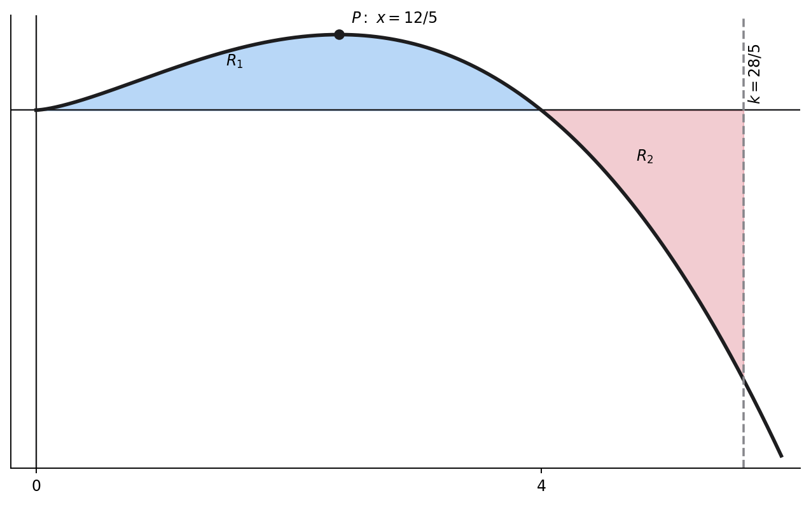

Figure 1 is a sketch of the curve \(C\) with equation \(y=2x^{3/2}(4-x)\), \(x\ge0\).
The point \(P\) is the stationary point of \(C\).
(a) Find, using calculus, the \(x\) coordinate of \(P\). (4)
The region \(R_1\), shown shaded in Figure 1, is bounded by \(C\) and the \(x\)-axis.
The region \(R_2\), also shown shaded in Figure 1, is bounded by \(C\), the \(x\)-axis and the line with equation \(x=k\), where \(k\) is a constant.
Given that the area of \(R_1\) is equal to the area of \(R_2\)
(b) find, using calculus, the exact value of \(k\). (4)

Status: Lesson reviewed; the signed-area method and stationary-point rationale are corrected below.
[8 marks]
Strategy and why. Expand the product into powers, differentiate term by term, factor the derivative, and identify which stationary solution corresponds to the labelled interior point. Do not spend time computing a y-coordinate that the command does not request.
Formula, definition or identity before substitution. Use \(\frac{d}{dx}x^n=nx^{n-1}\). A stationary point satisfies \(dy/dx=0\). Factoring a common \(x^{1/2}\) exposes the endpoint and interior solutions.
Full source-specific derivation. Differentiate: \[\frac{dy}{dx}=12x^{1/2}-5x^{3/2}=x^{1/2}(12-5x).\] Set the derivative to zero: \[x^{1/2}(12-5x)=0.\] This gives \(x=0\) or \(x=12/5\). The value \(x=0\) is the domain boundary; \(P\) is the interior stationary point. Therefore \[\boxed{x_P=\frac{12}{5}}.\]
Diagnosis and why the rejected route fails. The recorded work correctly found 12/5 but then looked for a y-coordinate. That extra calculation fails the efficiency cue because the source asks only for x. Discarding x=0 needs geometric interpretation rather than silently omitting a derivative root.
Check back and interpretation. For \(0<x<12/5\), both factors in the derivative are positive; for x above 12/5, \(12-5x<0\). The sign changes from positive to negative, confirming an interior maximum at P.
Recognition trigger. Underline exactly which coordinate a stationary-point question requests. Solve all derivative roots, then use the domain and diagram to identify the labelled point rather than computing unrequested coordinates.
Strategy and why. Translate equal geometric areas into signed integrals, placing a leading minus on the below-axis region. Cancel the common integral cleanly, integrate with x as the dummy variable, and solve the resulting exact upper-limit equation for k.
Formula, definition or identity before substitution. If \(F\) is an antiderivative, then area below the axis on [4,k] is \(-\int_4^k y\,dx\). Here \(F(x)=\frac{16}{5}x^{5/2}-\frac47x^{7/2}\).
Full source-specific derivation. Equality gives \(\int_0^4y\,dx=-\int_4^ky\,dx\), hence \(\int_0^ky\,dx=0\). Therefore \[\frac{16}{5}k^{5/2}-\frac47k^{7/2}=0.\] Factor: \[k^{5/2}\left(\frac{16}{5}-\frac47k\right)=0.\] The diagram requires \(k>4\), so reject k=0 and solve the bracket: \[\boxed{k=\frac{28}{5}}.\]
Diagnosis and why the rejected route fails. The lesson evidence records uncertainty about the sign of R2, a power-integration slip, and use of k in place of x inside the integrand. The last route fails because k is the boundary being solved for, whereas x remains the integration variable throughout.
Check back and interpretation. Differentiate \(\frac{16}{5}x^{5/2}-\frac47x^{7/2}\) to recover \(8x^{3/2}-2x^{5/2}=2x^{3/2}(4-x)\). Also \(28/5=5.6>4\), correctly placing R2 below the axis.
Recognition trigger. For equal-area problems across an axis crossing, write geometric area signs before integrating. Keep x inside the integral and reserve k for the terminal evaluation and equation.
